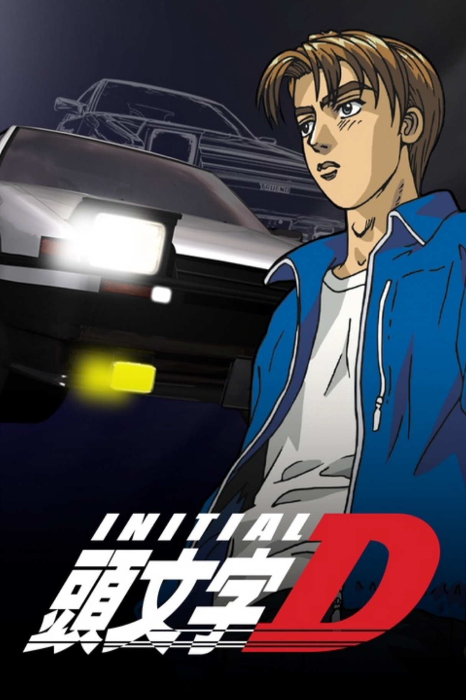
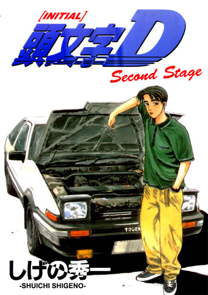
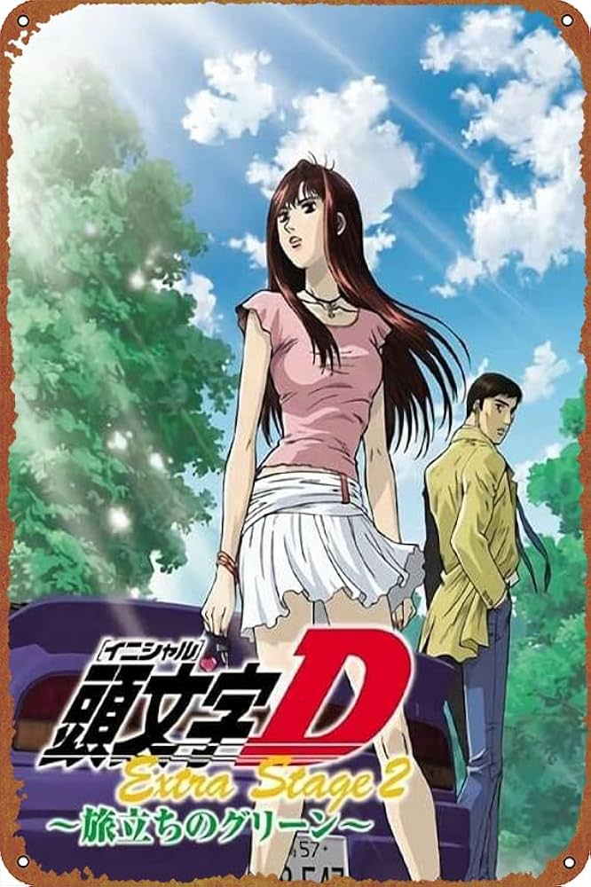
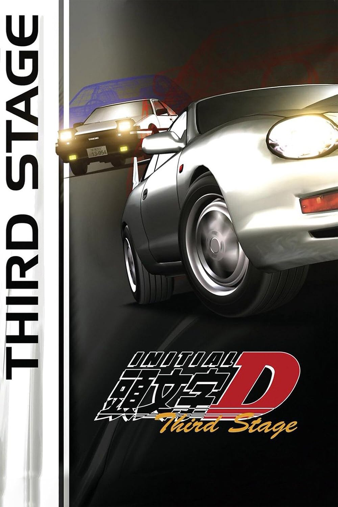
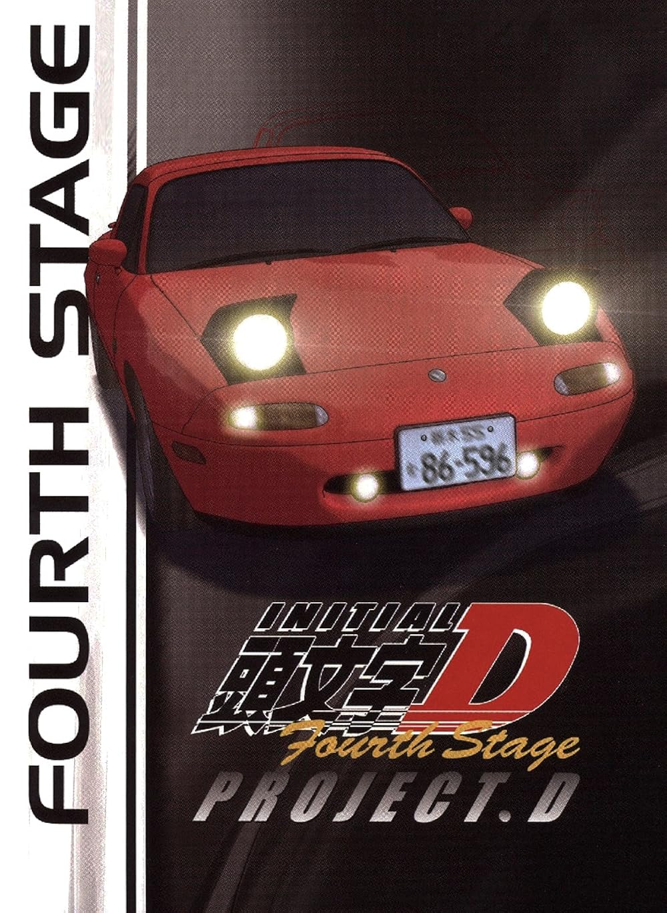
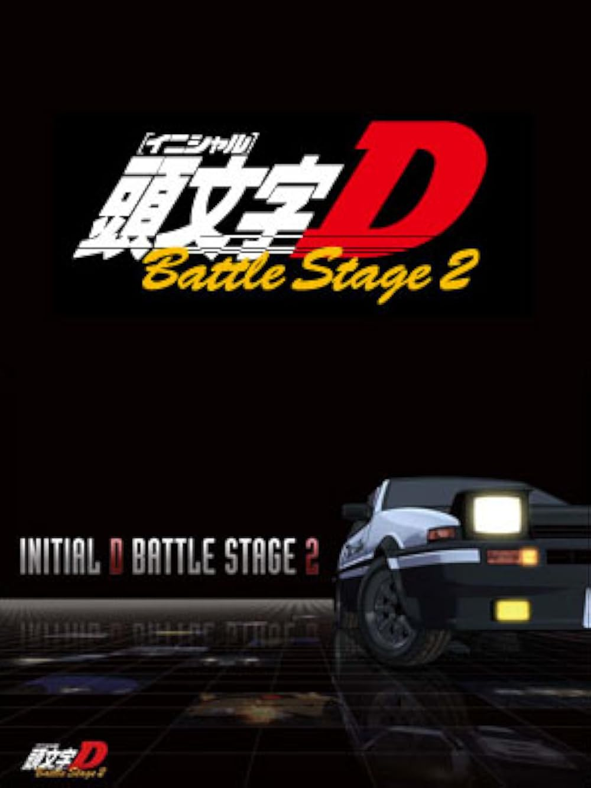
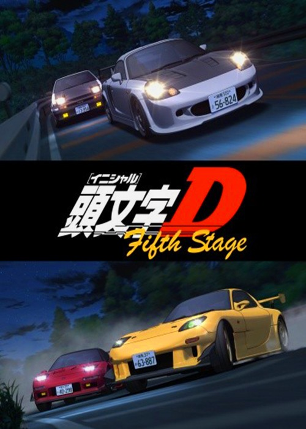
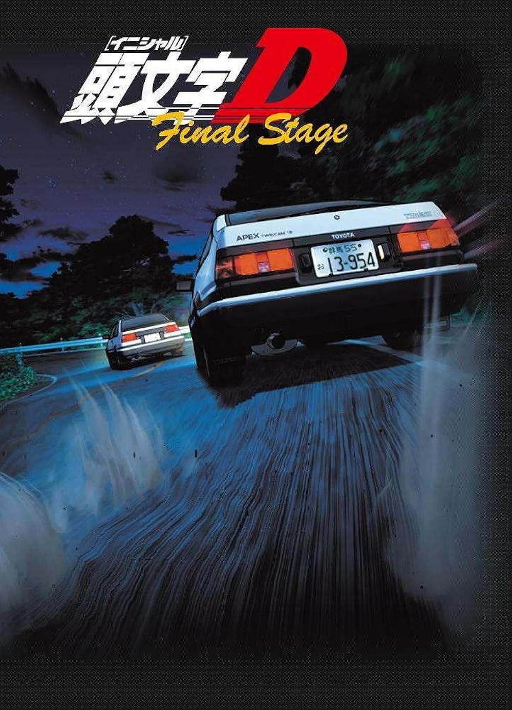

Stage by Stage Summary
First Stage (1998) – 26 Episodes
Setting the scene. The legend begins.
- Takumi Fujiwara, a high school student and tofu delivery boy, unknowingly becomes a street racing prodigy.
- Drives a seemingly underwhelming Toyota AE86 Trueno.
- Word spreads after he defeats local racers on Mt. Akina using insane downhill drift techniques.
- Faces off against drivers from Akina Speed Stars, Red Suns, and others.
- Key rivals: Keisuke Takahashi (FD3S), Nakazato (R32), and Shingo (EG6).
Second Stage (1999) – 13 Episodes
Rising competition. More advanced rivals.
- Takumi becomes more serious about racing.
- Faces off against teams like the Myogi NightKids, Emperor, and Lancer Evolution drivers.
- Main focus: his evolving skill, car upgrades (like a new racing engine), and psychological growth.
- Romantic subplot deepens with Natsuki, adding personal drama.
Extra Stage (2000 & 2008) – 2 Episodes Each
Side stories – focused on female drivers.
- Extra Stage 1: Follows Mako and Sayuki of Impact Blue (SilEighty duo from First Stage).
- Extra Stage 2: Sequel showing their struggles to break into pro racing.
Third Stage: The Movie (2001)
Takumi’s first major transition
- Deals with aftermath of Second Stage and Project D’s formation.
- Takumi battles his father Bunta's Impreza WRX STI.
- Big race: vs. Ryosuke Takahashi (FC RX-7) — again.
- Emotional climax with Natsuki, relationship hits a wall.
Fourth Stage (2004–2006) – 24 Episodes
The era of Project D.
- Takumi (AE86) and Keisuke (FD RX-7) form Project D, led by Ryosuke.
- Travel across the Kanto region to challenge top racing teams.
- Features more technical and strategic battles — uphill (Keisuke) vs. downhill (Takumi).
- Battles against teams like Team 246, Team Spiral, and God Foot/God Hand.
Battle Stage 1 & 2 (2002 / 2007)
Recap and remaster of races.
- No real story; just digitally enhanced versions of iconic battles from First–Fourth Stage.
Fifth Stage (2012–2013) – 14 Episodes
Project D continues their dominance.
- Takes on the last of Kanto’s elite.
- Focus on Kanagawa races and introspective development of both Takumi and Keisuke.
- Notable rivals include Shinigami (NSX driver) and the deadly Side-by-Side racing style.
Final Stage (2014) – 4 Episodes
The final battle.
- Takumi faces Shinji Inui — a young AE86 driver who mirrors his younger self.
- One of the most symbolic and emotional races in the series.
- Ends in an unpredictable, skill-focused battle of instincts.
- Project D concludes its mission.